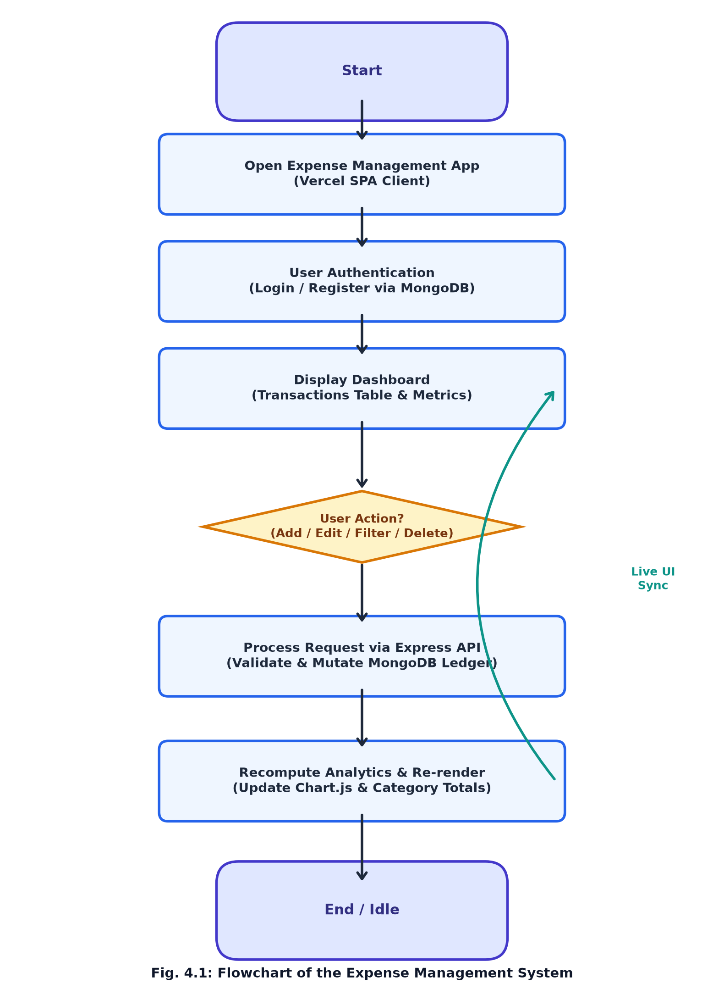
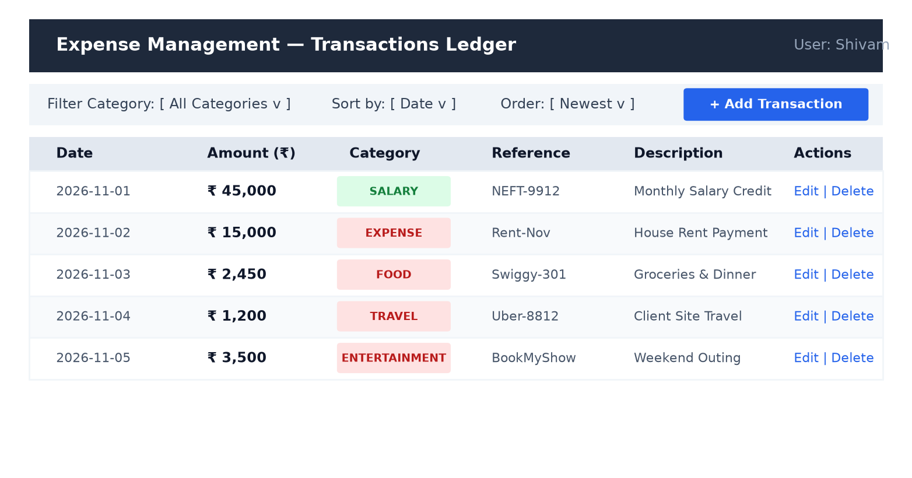
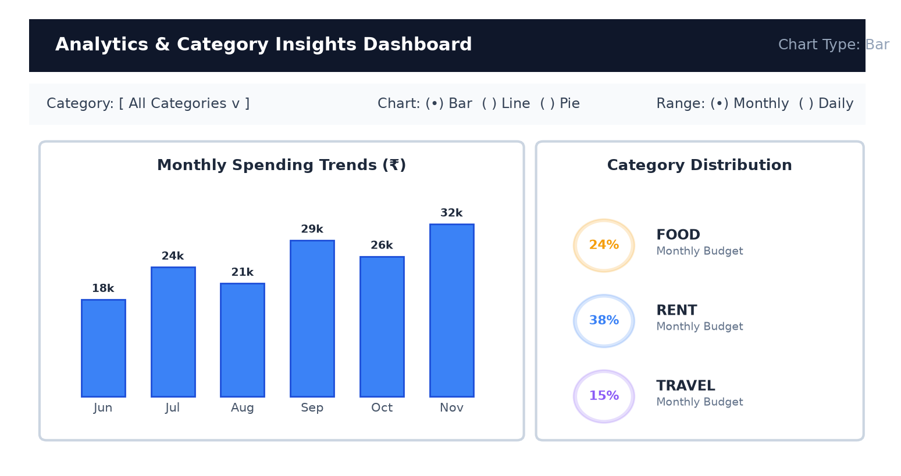

| S. No |
Topic | Page No. |
|---|---|---|
| 1 | Introduction | 1 |
| 2 | Requirement | 2 |
| 3 | Conceptual Background | 3 to 5 |
| 4 | Implementation | 6 |
| 4.1 | Coding | 6 to 9 |
| 4.2 | Flow Chart | 10 |
| 5 | User Interface | 11 |
| 6 | Conclusion | 12 |
| References | 13 |
Financial stability and systematic expenditure tracking play an essential role in the development and financial health of individuals and households. Personal budgeting is an indispensable practice for monitoring cash flows, identifying discretionary spending habits, and safeguarding savings goals. However, monitoring and logging every monetary transaction manually can be challenging when users must consider several spending categories simultaneously.
Traditional approaches to expense management mainly depend on examination of physical bills, manual cash ledgers, or periodic review of bank account statements. Although these manual approaches are familiar, they suffer from significant recording delays, human calculation errors, and an inability to provide early warnings against budget exhaustion. As a result, individuals frequently experience unforeseen end-of-month financial distress.
The Full-Stack Expense Management System, built upon the modern MERN technology stack (MongoDB, Express.js, React.js, and Node.js), is a comprehensive web project designed to support daily income and expenditure tracking. It accepts relevant transactional details, processes the inputs, and stores them in a scalable cloud document database.
The system aims to present the ledger in an intuitive format and provide automated categorical summaries alongside visual analytics (Bar, Line, and Pie charts). This helps users understand potential overspending concerns and consider suitable budgeting adjustments.
The project uses JavaScript and an interactive React web application interface to demonstrate the practical application of full-stack engineering, cloud database management, and data visualization in the personal finance domain.
Personal cash flow is influenced by numerous factors, including monthly income, utility bills, rent, grocery outlays, travel expenses, and entertainment spending. Tracking and analyzing these factors manually requires considerable ongoing effort.
A major challenge is maintaining an up-to-date and organized transaction record. Without an organized analysis system, personal expenditures often escalate unnoticed, eroding liquidity before deficit trends are identified.
Therefore, there is a need for a system that can process transaction data securely, generate summaries, and present financial trends in a simple and understandable manner.
The proposed Expense Management System addresses this problem by combining modern web technologies, automated aggregation, and interactive chart visualizations into an accessible web dashboard.
The following hardware configuration is suitable for developing, running, and testing the application:
The exact hardware requirements depend on the size of the transactional database and the local development workload.
The project uses a JavaScript-based full-stack development environment. The relevant software components include:
Modern web software typically adheres to a decoupled client-server architectural paradigm. In this architecture, the client (the frontend user interface) and the server (the application backend) are completely separated, communicating asynchronously over the network using standard HTTP/HTTPS protocols and lightweight JSON data interchange formats.
This decoupling allows the frontend and backend to evolve, scale, and deploy independently. The frontend runs in the client's web browser, executing presentation logic, client-side routing, and state manipulation. The backend executes in a secured cloud environment, handling authentication, business logic, and database persistence.
The MERN stack is an acronym representing four foundational technologies: MongoDB, Express.js, React.js, and Node.js. Its primary architectural advantage is that it enables full-stack JavaScript development, eliminating context switching between different programming languages across application tiers.
MongoDB stores records as flexible BSON documents. Express and Node form a lightweight, non-blocking asynchronous event-driven server runtime. React provides a component-driven UI paradigm powered by Virtual DOM diffing. Together, these technologies offer optimal throughput, maintainability, and rapid development cycles.
A financial ledger requires high fidelity, accuracy, and immutability. Each transactional record must contain essential attributes to remain analytically meaningful. In personal finance accounting, each transaction encompasses the following core dimensions:
In a modern Single Page Application, user actions trigger state mutations that must be reflected immediately in both local client memory and remote cloud persistence layers. When a user creates or modifies an expense record, the following lifecycle occurs:
This bidirectional synchronization ensures that the user interface always presents an authoritative, up-to-date representation of financial status without requiring a full browser page refresh.
Unlike traditional relational databases that require rigid tabular schemas and SQL join operations, document-oriented NoSQL databases like MongoDB store semi-structured JSON-like documents. However, unrestricted document flexibility can introduce data inconsistency in production applications.
Mongoose Object Data Modeling (ODM) resolves this by enforcing strict application-level schema definitions. Mongoose verifies data types, enforces required attributes, validates unique email constraints, and automatically manages audit timestamps (createdAt, updatedAt).
Common preprocessing operations implemented in the application include:
The backend relies on the Representational State Transfer (REST) architectural style. REST defines stateless, cacheable communication using standard HTTP request methods: GET for data retrieval, POST for record creation, PUT for updates, and DELETE for record removal.
Express middleware functions intercept HTTP requests before they reach the controller handlers. In the Expense Management application, the middleware pipeline includes CORS (Cross-Origin Resource Sharing) configuration allowing communication with the Vercel-hosted frontend, express.json() for request body parsing, Morgan for development request logging, and custom health check handlers.
React is a declarative, component-based frontend library developed by Meta. Instead of rewriting traditional multi-page HTML documents, React loads a single HTML shell (index.html) and dynamically rewrites the DOM (Document Object Model) as the user interacts with the application.
React Router v6 provides client-side routing, intercepting URL changes and rendering designated components without requesting new pages from the server. Protected route wrappers verify user authentication tokens stored in browser localStorage, automatically redirecting unauthenticated visitors to the login view.
Raw tabular ledgers can be difficult to interpret when evaluating financial trends across months. Chart.js is an open-source, HTML5 Canvas-based visualization library that transforms tabular records into interactive charts.
In the Expense Management analytics module, Chart.js renders Bar charts to contrast spending across categories, Line charts to illustrate expenditure velocity over daily or monthly intervals, and Pie charts alongside circular progress meters to represent proportional category distributions.
# 1. Express Server Setup & Health Endpoint (backend/server.js)
const express = require("express");
const cors = require("cors");
const morgan = require("morgan");
const dotenv = require("dotenv");
const colors = require("colors");
const mongoose = require("mongoose");
const connectDb = require("./config/connectDb");
dotenv.config();
connectDb();
const app = express();
app.use(morgan("dev"));
app.use(express.json());
app.use(cors({ origin: "*", credentials: true }));
// Health check & Keep-alive endpoint
app.get("/", (req, res) => {
res.status(200).json({
message: "Expense Management API is running!",
status: "healthy",
endpoints: {
health: "/health",
users: "/api/v1/users",
transections: "/api/v1/transections",
},
});
});
app.get("/health", async (req, res) => {
try {
let dbStatus = "disconnected";
if (mongoose.connection.readyState === 1 && mongoose.connection.db) {
await mongoose.connection.db.admin().ping();
dbStatus = "connected";
}
res.json({
status: "ok",
database: dbStatus,
uptimeSeconds: Math.floor(process.uptime()),
timestamp: new Date().toISOString(),
});
} catch (err) {
res.json({ status: "ok", database: "connecting", error: err.message });
}
});
// routes
app.use("/api/v1/users", require("./routes/userRoute"));
app.use("/users", require("./routes/userRoute"));
app.use("/api/v1/transections", require("./routes/transectionRoutes"));
app.use("/transections", require("./routes/transectionRoutes"));
const PORT = process.env.PORT || 5000;
app.listen(PORT, () => {
console.log(`Server running on port ${PORT}`.bgGreen.white);
});
# 2. Database Connection & User Management (backend/controllers/userController.js)
const mongoose = require("mongoose");
const colors = require("colors");
// backend/config/connectDb.js
mongoose.set("strictQuery", false);
const connectDb = async () => {
try {
const mongoURI = process.env.MONGO_URL || process.env.MONGODB_URI;
if (!mongoURI) {
console.log("Warning: MONGO_URL not set in environment!".yellow);
return;
}
await mongoose.connect(mongoURI, { serverSelectionTimeoutMS: 5000 });
console.log(`MongoDB Connected: ${mongoose.connection.host}`.bgCyan.white);
} catch (error) {
console.log(`MongoDB connection error: ${error.message}`.bgRed);
}
};
// backend/controllers/userController.js
const userModel = require("../models/userModel");
const registerController = async (req, res) => {
try {
const { name, email, password } = req.body;
if (!name || !email || !password) {
return res.status(400).json({
success: false,
message: "Name, email, and password are all required",
});
}
const existingUser = await userModel.findOne({ email });
if (existingUser) {
return res.status(400).json({
success: false,
message: "Email already registered! Please login instead.",
});
}
const newUser = new userModel(req.body);
await newUser.save();
res.status(201).json({
success: true,
message: "Registration successful!",
newUser,
});
} catch (error) {
if (error.code === 11000) {
return res.status(400).json({
success: false,
message: "Email already exists. Please login or use another email.",
});
}
res.status(400).json({ success: false, message: error.message });
}
};
# 3. Transaction Controllers & Schemas (backend/controllers/transectionCtrl.js)
const TransectionModel = require("../models/transectionModel");
const addTransection = async (req, res) => {
try {
const newTransection = new TransectionModel(req.body);
await newTransection.save();
res.status(201).json({
success: true,
message: "Transection added successfully",
data: newTransection,
});
} catch (error) {
res.status(500).json({
success: false,
message: "Failed to add transection",
error: error.message,
});
}
};
const getAllTransections = async (req, res) => {
try {
const transections = await TransectionModel.find();
res.status(200).json({
success: true,
message: "All transections fetched successfully",
data: transections,
});
} catch (error) {
res.status(500).json({
success: false,
message: "Failed to fetch transections",
error: error.message,
});
}
};
const updateTransection = async (req, res) => {
const { id } = req.params;
try {
const transection = await TransectionModel.findByIdAndUpdate(
id, req.body, { new: true }
);
if (!transection) {
return res.status(404).json({ success: false, message: "Not found" });
}
res.status(200).json({ success: true, data: transection });
} catch (error) {
res.status(500).json({ success: false, error: error.message });
}
};
const deleteTransection = async (req, res) => {
const { id } = req.params;
try {
await TransectionModel.findByIdAndDelete(id);
res.status(200).json({ success: true, message: "Deleted successfully" });
} catch (error) {
res.status(500).json({ success: false, error: error.message });
}
};
# 4. Frontend API Configuration & Chart Engine (frontend/src/pages/Analytics.js)
// frontend/src/config.js
export const API_BASE_URL =
process.env.REACT_APP_API_URL ||
(typeof window !== "undefined" &&
(window.location.hostname === "localhost" || window.location.hostname === "127.0.0.1")
? "http://localhost:5000"
: "https://expense-management-v9yf.onrender.com");
// frontend/src/pages/Analytics.js
const processData = (transactions, selectedCategory, timeRange) => {
let filteredData = Array.isArray(transactions) ? [...transactions] : [];
if (selectedCategory !== "all") {
filteredData = filteredData.filter((t) => t.category === selectedCategory);
}
const categoryTotals = filteredData.reduce((acc, t) => {
acc[t.category] = (acc[t.category] || 0) + t.amount;
return acc;
}, {});
const timeSeriesData = filteredData.reduce((acc, t) => {
const date = moment(t.date).format(
timeRange === "monthly" ? "YYYY-MM" : "YYYY-MM-DD"
);
acc[date] = (acc[date] || 0) + t.amount;
return acc;
}, {});
return {
categoryTotals,
timeSeriesData,
totalAmount: filteredData.reduce((sum, t) => sum + (t.amount || 0), 0),
};
};
const getChartData = (categoryTotals, timeSeriesData, chartType) => {
const colors = ["#FF6B6B", "#4ECDC4", "#45B7D1", "#96CEB4", "#FFEEAD"];
return {
labels: Object.keys(chartType === "line" ? timeSeriesData : categoryTotals),
datasets: [{
label: chartType === "line" ? "Amount Over Time" : "Amount by Category",
data: Object.values(chartType === "line" ? timeSeriesData : categoryTotals),
backgroundColor: colors,
borderColor: colors,
borderWidth: 1,
}],
};
};

The Expense Management dashboard displays transaction ledger statistics, category filter controls, multi-attribute sorting tools, and an interactive financial analytics suite.

The analytical interface accepts financial parameters, summarizes spending velocity by time interval, and renders categorical distribution gauges alongside interactive Bar, Line, and Pie charts.

The Full-Stack Expense Management System demonstrates the practical application of JavaScript, asynchronous RESTful APIs, document databases, and reactive frontend component engineering in the personal finance domain.
The project provides a unified, coherent workflow through which financial transaction records can be created, inspected, modified, and deleted. The resulting records are persisted in a cloud MongoDB database and dynamically visualized through interactive chart interfaces, accompanied by category-wise percentage gauges and multi-attribute filters.
The project illustrates how the MERN stack contributes to personal financial wellness by helping individuals review their spending velocity in an organized, data-driven manner. It also provides comprehensive practical experience in developing production web applications, configuring cloud hosting providers (Vercel and Render), and maintaining 24/7 service availability through automated keep-alive mechanisms.
However, the system's long-term utility depends on regular user engagement, consistent transaction categorization, and future feature enhancements such as automated bank synchronization and machine-learning-based budget recommendations.
Overall, the application acts as an accessible, reliable personal finance companion, fostering disciplined money management habits and providing a solid foundation for enterprise wealth management software.
[1] React Documentation Team, "React 18 Documentation: The Library for Web and Native User Interfaces." Available: https://react.dev/
[2] Express.js Development Group, "Express - Fast, Unopinionated, Minimalist Web Framework for Node.js." Available: https://expressjs.com/
[3] MongoDB Inc., "MongoDB Atlas Cloud Database Manual and BSON Document Model." Available: https://www.mongodb.com/docs/atlas/
[4] Mongoose ODM Developers, "Mongoose: Elegant MongoDB Object Modeling for Node.js." Available: https://mongoosejs.com/docs/
[5] Ant Design Group, "Ant Design - An Enterprise-class UI Design Language and React UI Library." Available: https://ant.design/docs/react/introduce
[6] Chart.js Community, "Chart.js: Simple Yet Flexible JavaScript Charting for Designers & Developers." Available: https://www.chartjs.org/docs/latest/
[7] Vercel Inc., "Vercel Documentation: The Platform for Frontend Frameworks." Available: https://vercel.com/docs